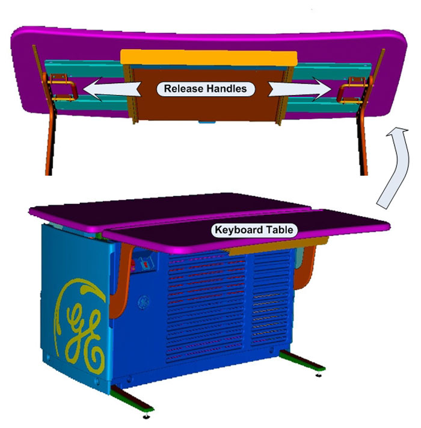
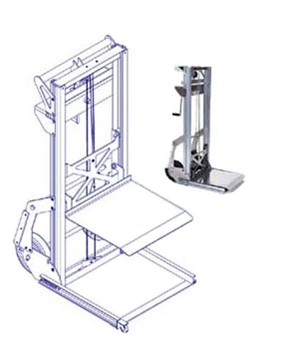
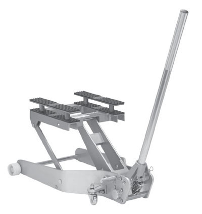

Operating Documentation
Direction 5193574-800, Rev# 22
Module Version 3.0, Version Date 7/24/13
Operating Documentation |
| ||||
| ELECTROCUTION HAZARD | ||||
| HIGH VOLTAGE PRESENT | ||||
| USE PROPER LOCKOUT / TAGOUT PROCEDURES BEFORE REPLACING THE COMPONENTS. |
| ||||
| POTENTIAL FOR INJURY TO SERVICE PERSONNEL | ||||
| COMPUTER COMPONENTS IN THE GOC6 AND 6.5 OPERATOR CONSOLES CAN WEIGH IN EXCESS OF 40 LBS. | ||||
| DEPENDING ON YOUR HEIGHT AND ACCESS TO EQUIPMENT REMOVAL/INSTALLATIONS, LIFTING ASSISTANCE MAY BE REQUIRED. USE YOUR JUDGEMENT TO DETERMINE IF LIFT ASSIST OR A SECOND PERSON MAY BE REQUIRED TO ASSIST IN REMOVAL AND INSTALLATION. |
| ||||
| FOLLOW ALL REQUIRED SAFETY AND PPE PROCEDURES CUSTOMARY FOR YOUR ORGANIZATION WHEN WORKING ON THIS PRODUCT | ||||
| Condition | Reference | Effectivity |
|---|---|---|
Clear access to the front and rear of the Operator Console is required for removing most components. Move the console away from walls and remove obstacles in room. | - | - |
Only trained service personnel should service the GE CT Scanner. | - | - |
Only a few of the GOC6 and 6.5 console components that are classified as Field Replaceable Units (FRUs) need special attention due to their associated weight. The following illustrations show those components labeled.
To allow the best access to the computer components in the console, the console keyboard table should be removed from the console and set aside. This allows better access to the front of the console without interference.
By pulling on the two (2) release handles under the Console Keyboard Table, the Keyboard Table can easily be removed from the support brackets without the use of tools. After releasing the Keyboard Table, lift the Keyboard Table away from its support brackets and set it aside being careful not to chip the laminate surface.
Illustration 3: Console Keyboard Table Removal

Remove the operator console front cover as covered in the FRU Replacement Procedures. Unobstructed access should now be available to the components.
In the event you believe you are not capable or allowed to lift any of the identified heavy computer components in Illustration 2, then request that a second person assist in the component removal and installation, or use a lift assist tool. See examples of two (2) lift assist tools in the illustration below:
Illustration 4: Genie Load Lift

Illustration 5: Hydraulic Jack Lift

Follow prescribed component replacement procedures located in the Parts Replacement chapter of this manual for disconnecting mounting hardware and cables attached to the component.
Pull the component forward from the console using the handles mounted on each of the component chassis. Do this in a kneeling position to minimize back strain, utilizing any and all personal protection equipment (PPE). Due to ergonomic concerns, it is not advisable to do this in a standing position. Pull the component forward approximately 4-6 inches (15 cm).
Align the lift assist tool so the tool lifting surface is centered in front and under the component. Adjust the height of the lift assist tool so it just touches the underside of the component.
Pull the component out away from the console until it sits evenly on the lift assist tool. Move the lift assist away from the console.
Lower the lift assist tool next to the replacement component and transfer the old component with the replacement.
Repeat this process in reverse to install the replacement component.